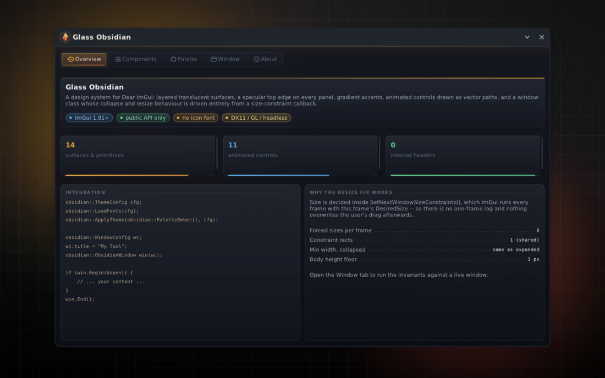
01 · Overview
Hero panel with accent top-edge, stat cards with gradient meters, and two fill-height columns. The window chrome, tab strip and panels are all translucent — the bloom behind them is the ambient backdrop.
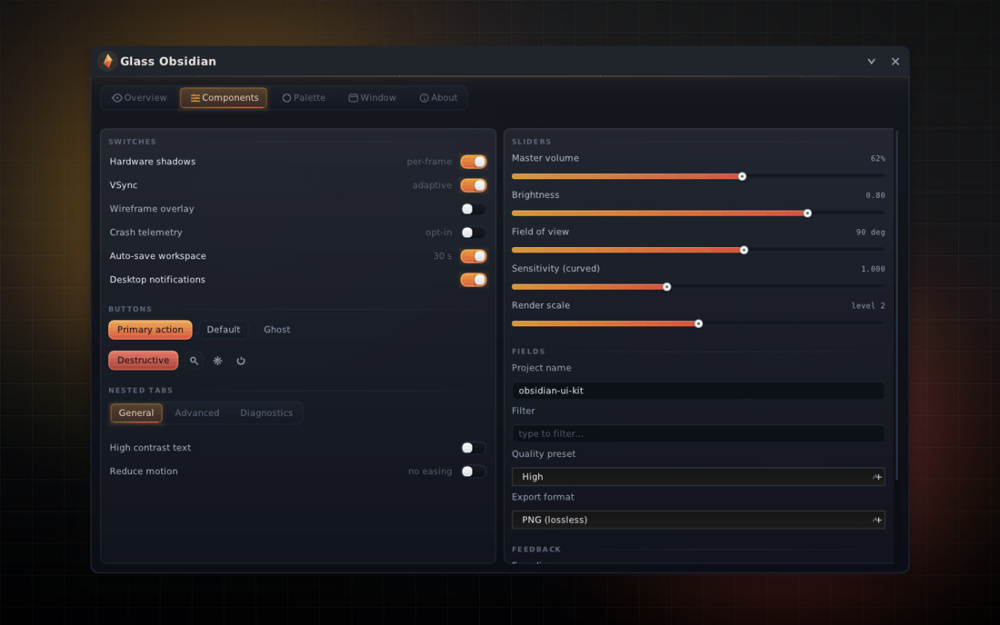
02 · Components
Toggles, gradient sliders, buttons, nested tabs, text inputs and combos — all drawn as vector paths, no textures.
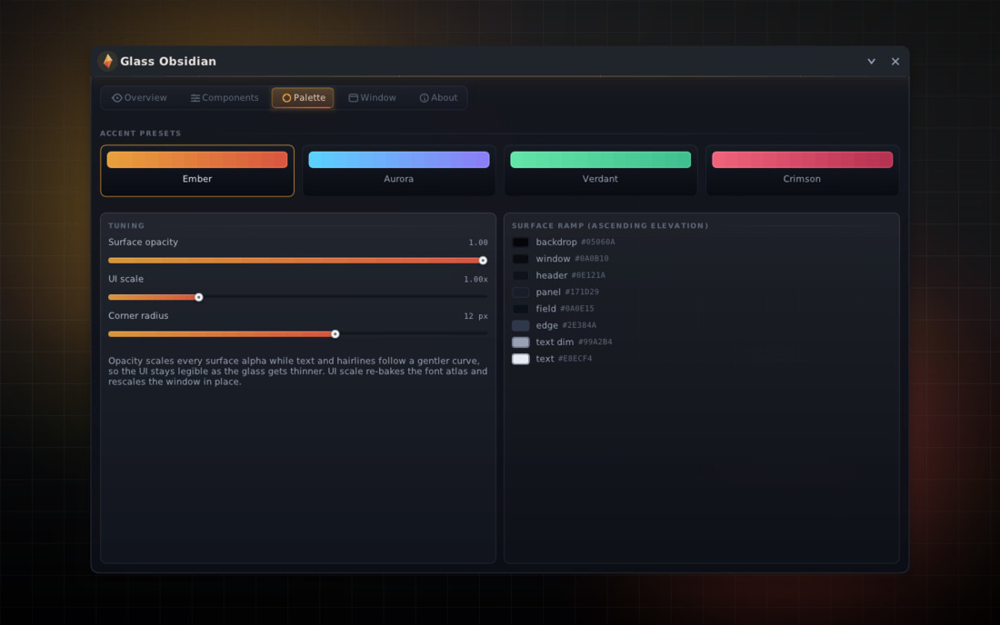
03 · Palette studio
Accent presets, live surface-opacity / UI-scale / corner-radius tuning, and the ascending surface ramp with hex read-outs.
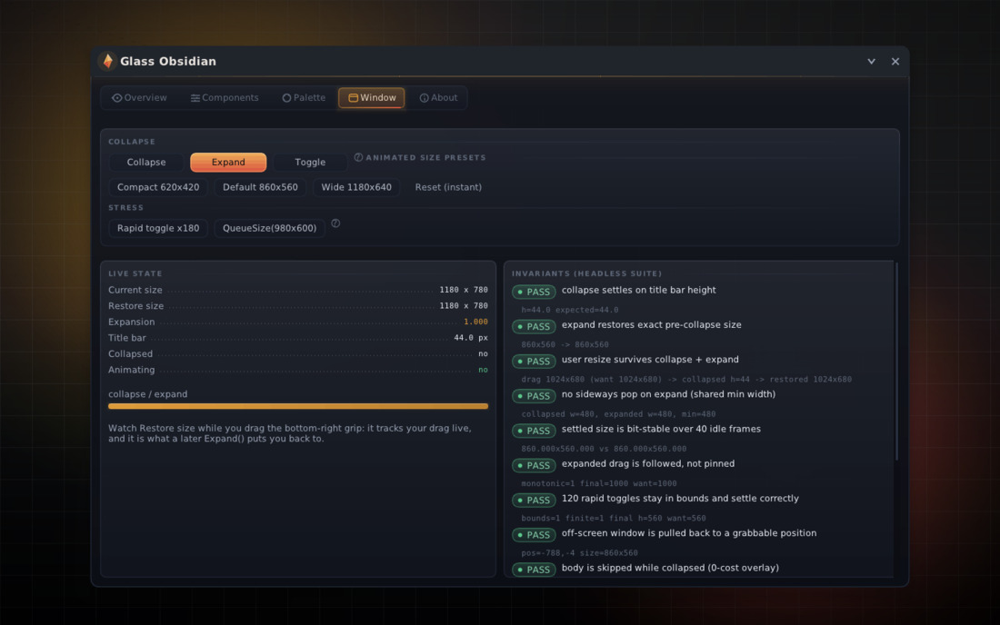
04 · Window bench
The collapse/resize controls plus the live invariant suite results rendered inside the UI itself.
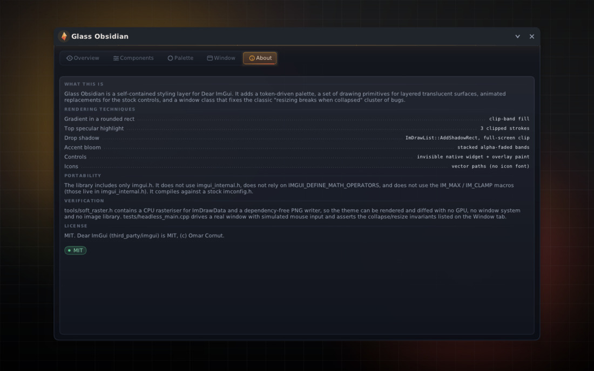
05 · About
Scope, guarantees and the exact recipe of the resize fix.
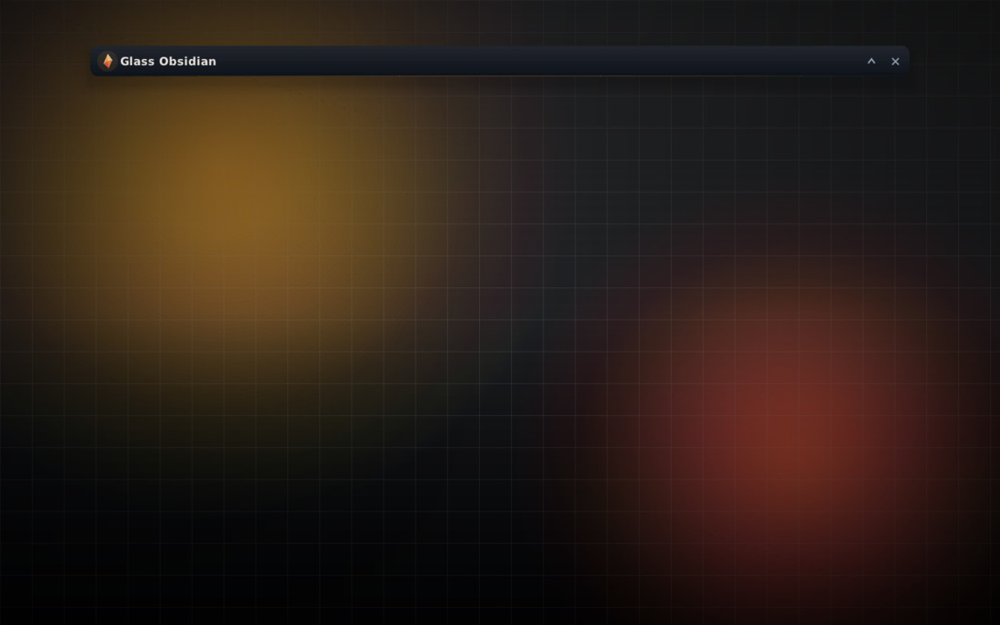
06 · Collapsed
Settled state is exactly the title bar height; the body is not submitted at all, so a collapsed overlay costs (almost) nothing.
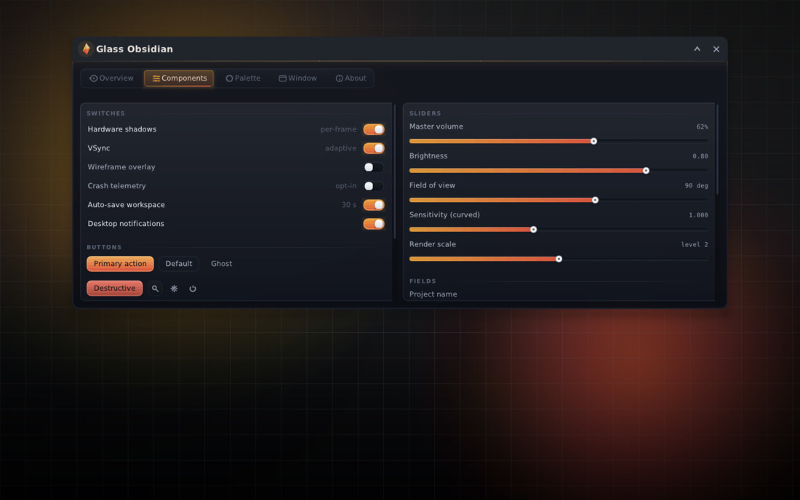
07 · Mid-collapse
The morph frozen ~40% through: height, body clip and opacity are driven by the same eased timeline.
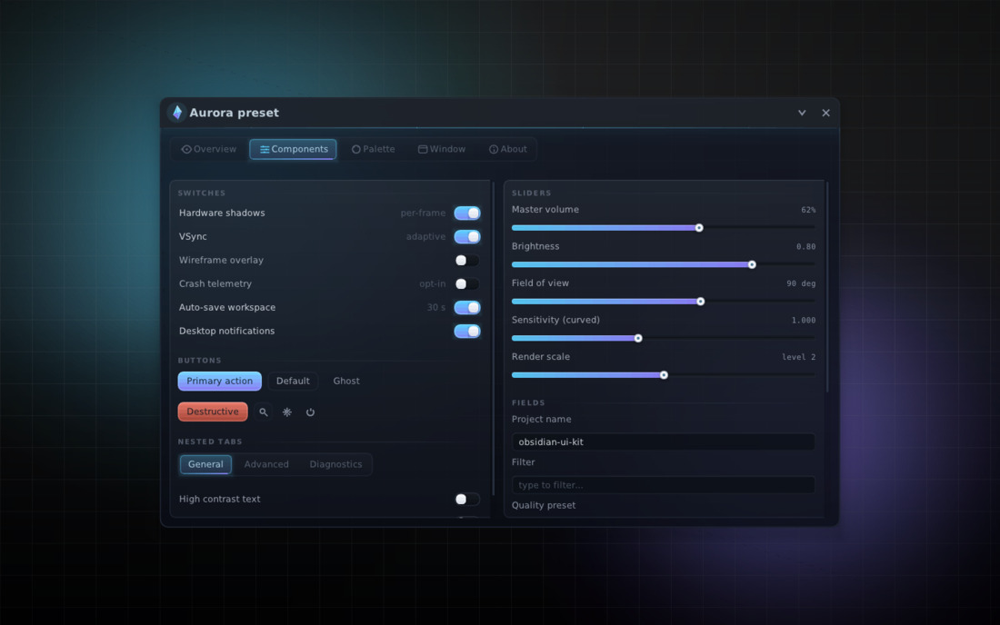
08 · Aurora preset @ 0.80 opacity
Every token re-derived from one palette struct; translucency shows the backdrop through the glass.
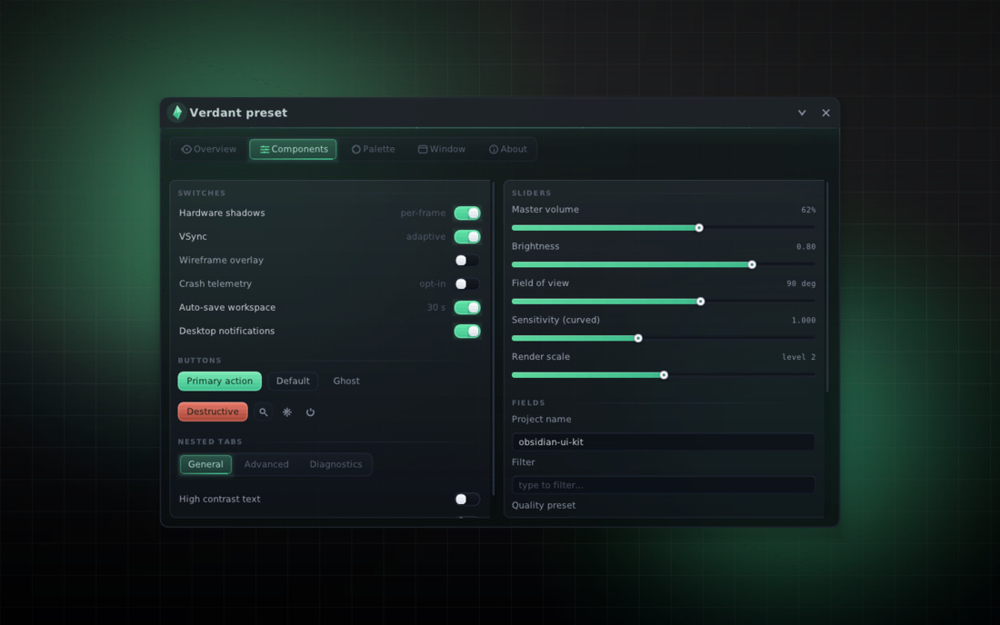
08 · Verdant preset
Same layout, different accent ramp.
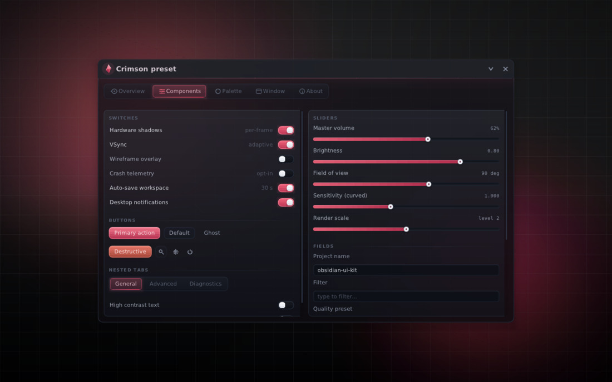
08 · Crimson preset
Warm red accent, cooler glass.
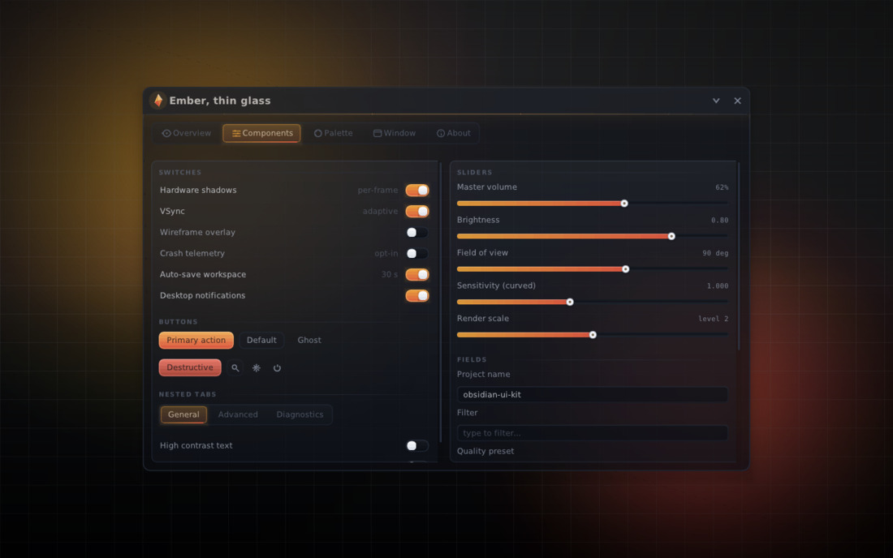
08 · Ember, thin glass (0.62)
Opacity floor test: text and hairlines follow a gentler alpha curve so the UI stays legible as the glass thins.
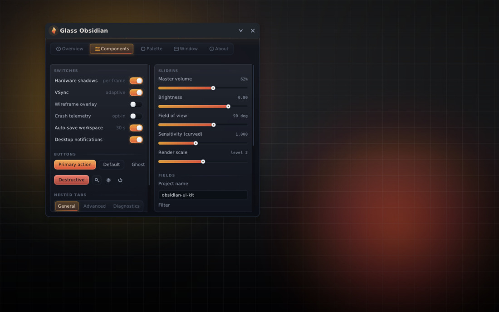
09 · Compact 620 px
Single-column fallback: every control still reachable at the shared minimum width.
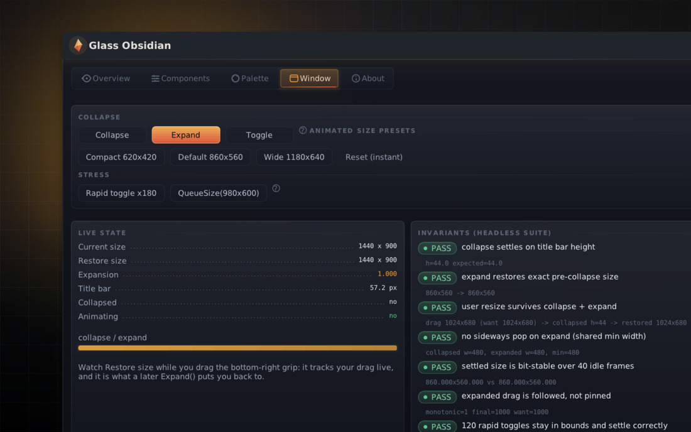
10 · ui_scale 1.30
Font atlas re-baked and window rescaled in place — nothing clips.